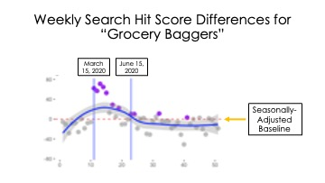

Can culture evolve through unsettled times?
Can large-scale environmental disruptions create cultural belief change? While prevailing models of cultural change emphasize the stability of beliefs in adults, we propose that durable belief change can occur when major events transform a society's material or cultural environment in ways that make specific stimuli unexpectedly salient, such as certain occupations during the Covid-19 pandemic lockdown period.
